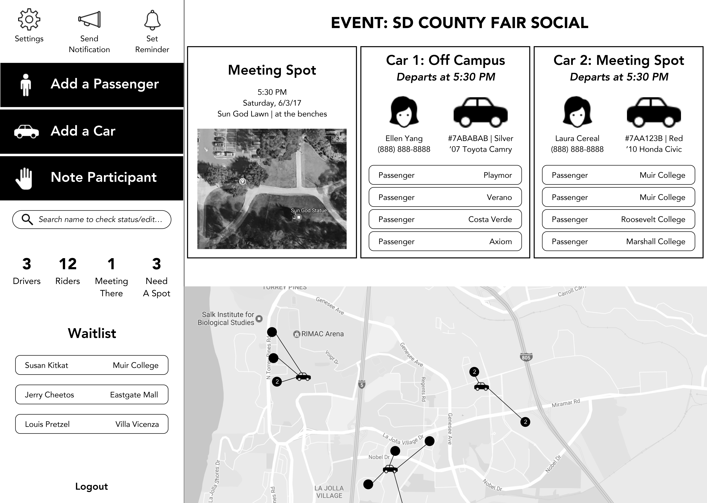
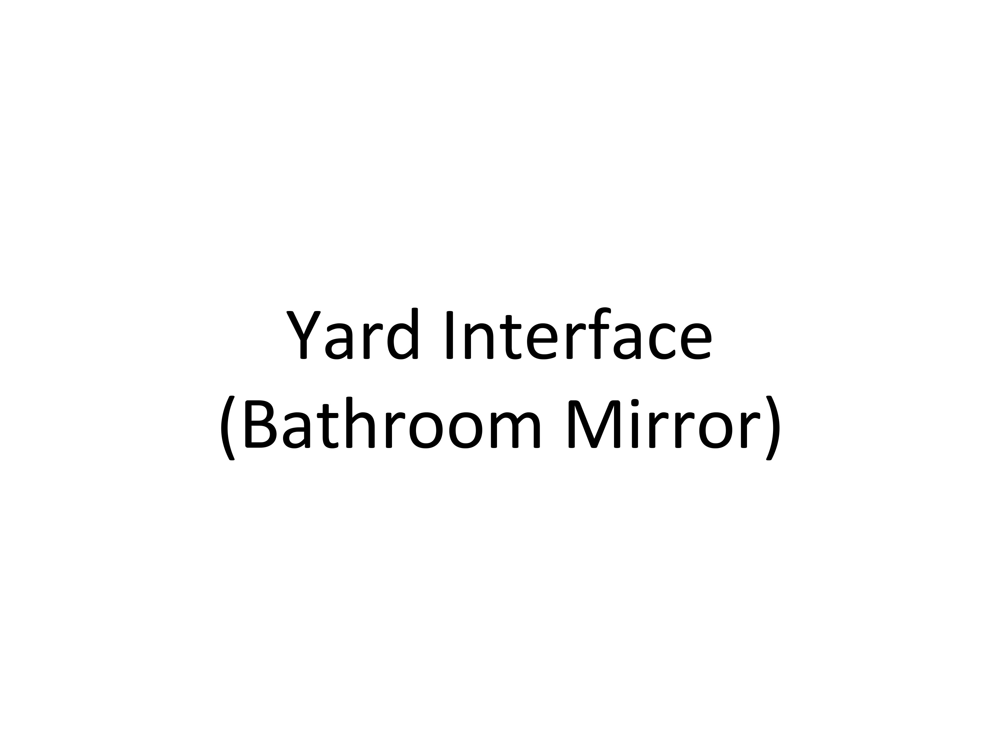
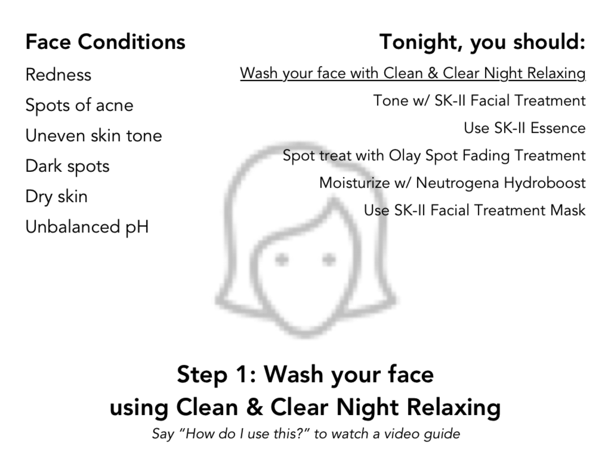
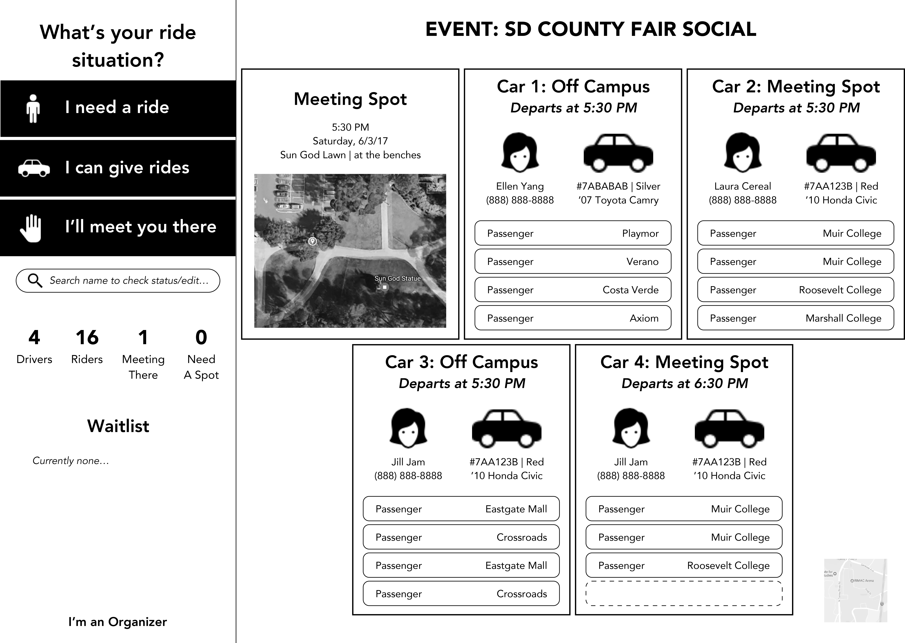
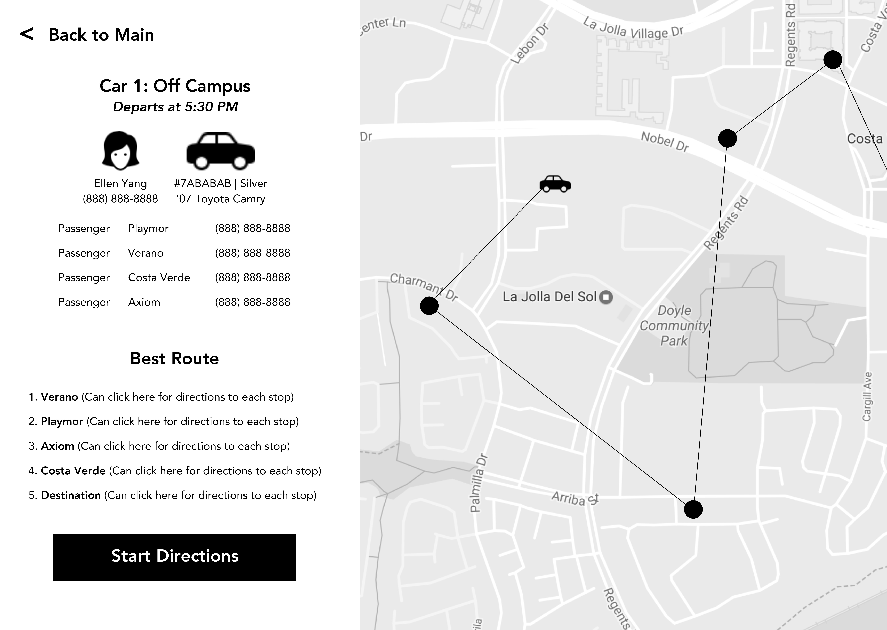

TASK & DOMAIN
This interface is for student organizations who need to arrange carpools for its members for socials and such so that more people can go and hang out with each other. The task is to arrange carpools in an easy, convenient manner to optimize the drivers' pickup/dropoff routes, for organizers to be able to communicate necessary information to participants, and for participants to see relevant information regarding the carpool situation.
VIDEO WALKTHROUGH OF DIGITAL PROTOTYPE
PDF OF PROTOTYPE




